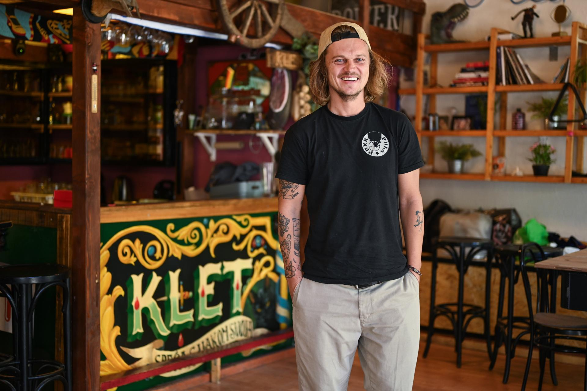

Centralni prostor Kleti pomno je uređen. Zidove krase brojni plakati lokalnih umjetnika, a namještaj su mahom unikatni komadi koje, ponovno, opet najviše određuju intervencije umjetnika. Osim središnjeg prostora, oko Kleti je još nekoliko garaža, a na nekima od njih su baš u trenutku naše posjete u tijeku radovi. Automobilima je – dobra je vijest za sve one koji cijene umjetnost - pristup tim garažama zabranjen, a one će imati jednu sasvim drugu funkciju.
Sve je počelo nakon potresa. Kako smo na sve strane popravljali oštećene stanove, osobno sam se zainteresirao za osnove građevine. Onda smo tako iz neobavezne ideje, bez plana i cilja, i kompletno u do it yourself aranžmanu počeli uređivati ovu našu garažu na kojoj su jedino garažno vrata – prisjeća se Nogolica.Trenutno su u Kleti u finišu posljednji radovi kojima se dio prostora pretvara u galeriju, a dio u tiskaru starih zanata u kojoj će se raditi sitotisak te riso print.
